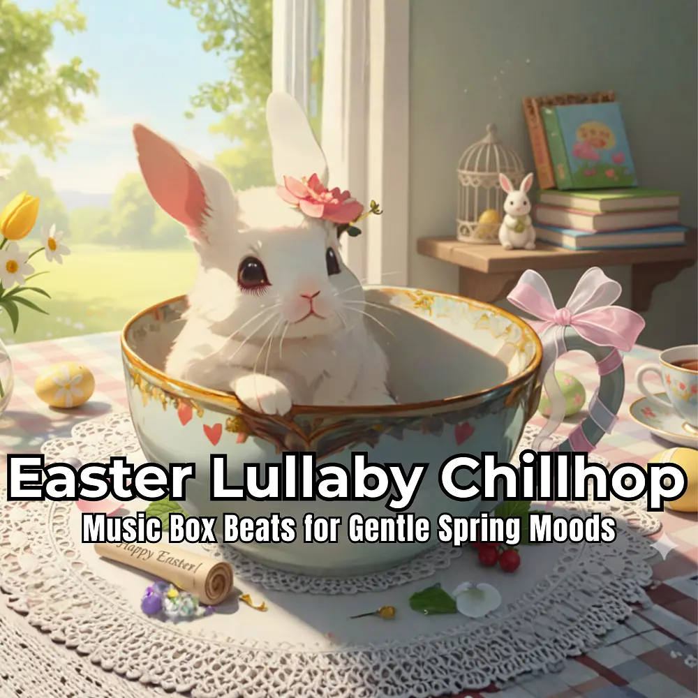

Chillhop
Easter Lullaby Chillhop : Music Box Beats for Gentle Spring Moods
Nanashino-chan
Explore Easter Lullaby Chillhop : Music Box Beats for Gentle Spring Moods by Nanashino-chan: 28 instrumental tracks spanning Chillhop. Start with Spring Soundscapes / Soft Morning Petals, preview the collection and find your favorites on streaming services.
2026-03-03 · Released · 28 tracks · Instrumental
Preview the album
The jacket stays here until you choose a track. Playback uses YouTube.
YOUTUBE PREVIEW
Choose a track to listen
The jacket stays here until you choose a track. Playback uses YouTube.
If playback is unavailable, open the album or track on the streaming service.
Find this album on streaming services
Links marked “search” open search results. Select the album or track on the service.
Track list 28
- 01Spring Soundscapes
- 02Soft Morning Petals
- 03Quiet Bunny Steps
- 04Pastel Skies at Dawn
- 05Gentle Window Light
- 06Cotton Cloud Memories
- 07Warm Sunday Air
- 08Whispering Blossoms
- 09Lullaby in the Garden
- 10.Slow Bloom Dreams
- 11Sunlit Courtyard
- 12Calm Afternoon Notes
- 13Hidden Easter Letters
- 14Soft Footsteps on Stone
- 15Floating Paper Wishes
- 16Peaceful Alleyway
- 17Tender Spring Echoes
- 18Fading Pollen Glow
- 19Stillness Between Bells
- 20Cozy Porch Reflections
- 21Warm Breeze Lullaby
- 22Quiet Holiday Streets
- 23Soft Pastel Twilight
- 24Drifting Spring Thoughts
- 25Gentle Light Remains
- 26Calm After Celebration
- 27Nightfall Petal Drift
- 28Until the Next Spring
Find a sound for your next post
Copy “Nanashino-chan + track title” and paste it into your social app’s music search. Availability depends on your region and account. Copying the name does not grant usage rights.